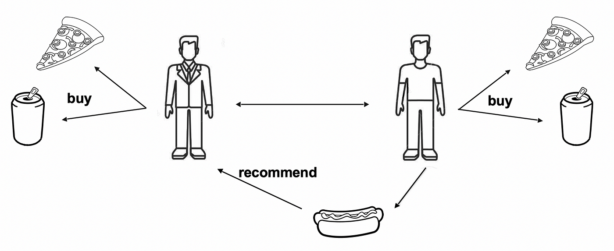
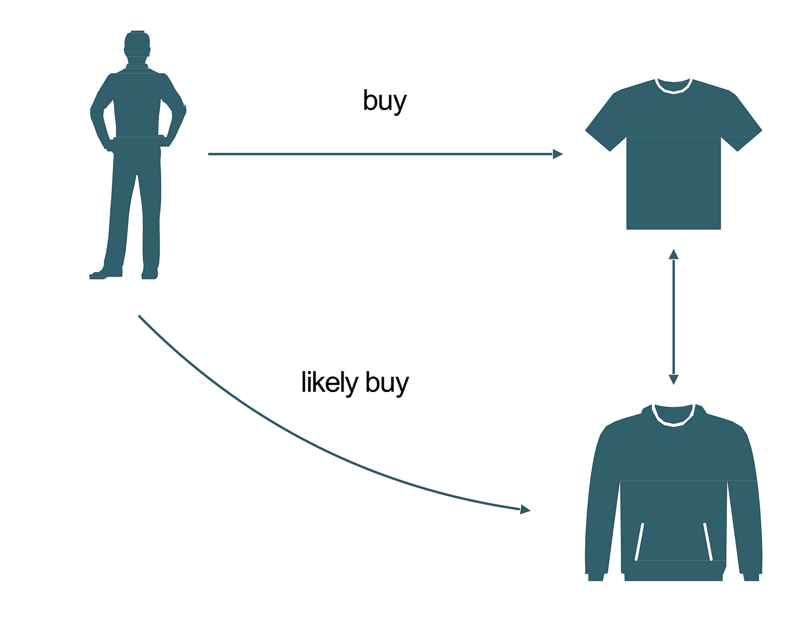
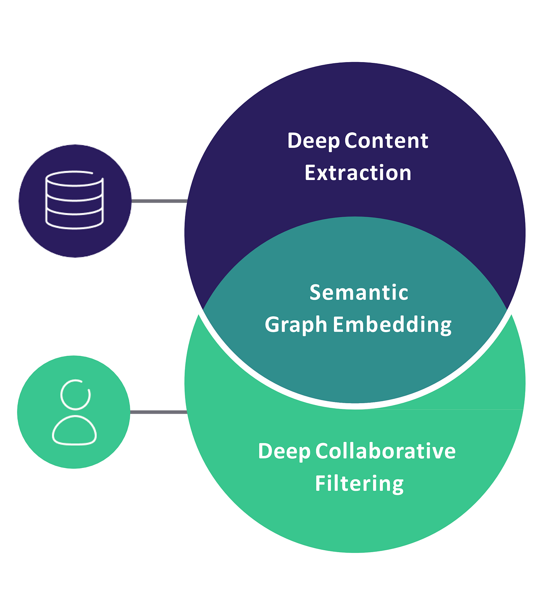

我们通常将推荐引擎算法分为两类：协同过滤模型和基于内容的模型。它们根据所涉及的数据类型而有所不同。
协同过滤模型使用用户对商品的反馈数据集（通常是星级或赞成/反对）来计算其预测。基于内容的模型仅使用商品的特征（例如产品的价格或颜色）。
协同过滤
首先，我们深入研究协同过滤模型。它们建立在用户/商品反馈数据集之上。这可能是显式反馈，例如星级或点赞/踩，也可能是隐式反馈，例如电视节目的观看集数。

协同过滤
我们根据这些模型处理数据的方式进一步对其进行分类。让我们看看每种方法的优点和缺点。
用户-用户
最常用的推荐算法遵循“喜欢你的人也喜欢那个”的逻辑。我们称之为“用户-用户”算法，因为如果相似的用户之前喜欢过这个商品，它会向用户推荐这个商品。两个用户之间的相似度是根据他们在数据集中拥有的共同商品数量计算出来的。
当用户数量远小于商品数量时，此算法非常有效。您可以想象一个拥有数百万种产品的中型在线商店。主要缺点是添加新用户的成本很高，因为它需要更新用户之间的所有相似性。
商品-商品
“ item-item ”算法使用相同的方法，但反转了用户和项目之间的视图。它遵循“如果你喜欢这个，你可能也会喜欢那个”的逻辑。它会推荐与你之前喜欢的项目相似的项目。和以前一样，两个项目之间的相似度是使用它们在数据集中拥有的共同用户数量来计算的。
当商品数量远小于用户数量时，例如大型在线商店，此算法效果最佳。如果您的商品变化不大，此算法非常适合，因为您可以预先计算商品间相似性的完整表格，然后实时提供推荐。遗憾的是，更新此表格以添加新商品非常困难。
用户项目
有多种形式的“用户-项目”推荐算法，它们结合了两种方法来生成推荐。最简单的算法是基于矩阵分解技术。
目标是学习所有用户和所有项目的低维向量（“嵌入”），这样将它们相乘就可以恢复用户是否喜欢某件商品。您可以将这些向量视为对某件商品具有某种特征的程度（如电影是一部戏剧）以及用户对商品中这种特征的喜爱程度的编码。
这种分解最好使用SVD进行训练，但由于该算法计算量非常大，我们通常更喜欢其他方法。对于中等规模的数据集， ALS将提供合理的性能。对于大型数据集，只有SGD算法能够扩展，但速度会非常慢。
一旦预先计算了用户嵌入和项目嵌入，就可以实时提供推荐。这种方法的另一个好处是，您可以使用嵌入来了解有关用户和项目的更多信息。例如，您可以根据用户或项目的偏好对其进行聚类。
用户-项目算法的缺点是在添加新项目或新用户后没有有效的方法来更新嵌入。
基于内容
所有之前的模型都存在所谓的冷启动问题。由于推荐是使用用户对商品的反馈数据集计算得出的，因此它们无法推荐没有（或只有少量）反馈的商品，例如新商品。同样，在开始对足够多的商品给出反馈之前，它们无法向新用户推荐任何东西。
使用基于内容的模型可以缓解这些问题。该方法与以前的用户-用户或项目-项目算法相同，只是相似度仅使用基于内容的特征来计算。要训练解决项目冷启动（或用户冷启动）的模型，您需要一个数据集，其中包括项目（或用户的）的详细描述，例如电影的类型、预算、持续时间或任何可能有助于推荐的变量。

基于内容的模型
机器学习中模式识别的最新进展利用从原始图像或原始文本描述中提取的信息，为基于内容的模型带来了巨大的改进。网上可以找到大量计算机视觉或自然语言处理的工具和预训练的深度学习模型。
使用预训练模型的明显好处是您不需要庞大的数据集和昂贵的服务器来训练您的推荐引擎。
混合模型和深度学习
最现代的推荐引擎算法（以及我们在Crossing Minds使用的算法）利用深度学习来结合协同过滤和基于内容的模型。混合深度学习算法使我们能够学习用户和项目之间更精细的交互。因为它们是非线性的，所以不太容易过度简化用户的品味。
深度学习模型可以表示各种项目的复杂品味，甚至可以来自跨域数据集（例如涵盖音乐、电影和电视节目）。在混合深度学习算法中，用户和项目使用通过协同过滤方法学习的嵌入和基于内容的特征进行建模。一旦计算出嵌入和特征，就可以实时提供推荐。

混合模型
此类算法的学习方案接近传统的深度学习，即具有加速启发式的小批量 SGD。但事实上，推荐数据集与通常的计算机视觉数据集有很大不同，这使得使用现有的实现和工具变得更加复杂（例如，TensorFlow 或 PyTorch 等库中的许多优化器不支持稀疏更新动量，这是训练推荐深度模型的基石）。工程师和研究人员通常需要自己实现和训练更多的东西，这需要专家的时间和大量的计算资源。
深度学习模型的另一个缺点是它们需要大量的超参数优化。与计算机视觉领域中大量的开源架构相比，推荐引擎几乎没有众所周知的架构或预训练模型。
最初由Crossing Minds的联合创始人Emile Contal在Quora上回答。